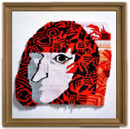

■小國 萌椋
痕跡を追いかけ、また痕跡が残った。
■加来 朋美
ペンや鉛筆でイラストレーションを描いたり、映像作品を制作したりしてます。
＜HP＞
http://tsunoo.tumblr.com/
＜Twitter＞ @onso100
＜その他＞
多摩美術大学油画専攻在籍中
■笠原 まみ
女の子カルチャーの回し者です。
＜Twitter＞ @76_mg
＜仕事履歴＞
2013年多摩美術大学情報デザイン学科メディア芸術コース入学
■KushiBa
どうぞ宜しくお願いします。
＜Twitter＞ @Kushiba_0709
■三瓶 奈穂子
制服と明け方と紙媒体が好き。時々アクセサリー制作もしています。
＜HP＞
http://www.idd.tamabi.ac.jp/o46034/
＜Twitter＞ @21_peeeco

■高橋 ほの夏
大学ではテキスタイルについて学んでいます。
＜Facebook＞ ほの夏高橋
＜Twitter＞ @pinupmoon7
■高宮 舞子
4/25 六本木アートナイト2015参加予定です。
みなさまお時間ありましたらぜひ。
＜ポートフォリオ＞
http://www.idd.tamabi.ac.jp/o46045/index.html
＜Twitter＞ @maico24o
＜仕事履歴＞
GLAYEXPO2014アニメーション演出参加
映画「暗殺教室」装飾助手
■ニシダ キヨミ
女の子が持つ正直な懐疑心や毒を表現するべく活動しています。
＜Twitter＞ @west_saint10
■山中 優近
女の子描くことと納豆ご飯が好きです。
＜Twitter＞ @msck27
＜告知＞
渋谷の東急ハンズでも展示やってますのでよろしかったらどうぞ。
■渡会ももこ（９６５）
イラストを中心に漫画やアニメに展開して作品を作っています。
＜HP＞
http://www.idd.tamabi.ac.jp/o46070/
＜Twitter＞ @alicewatson_mw
■掲載期間：３月１６日～３月３１日